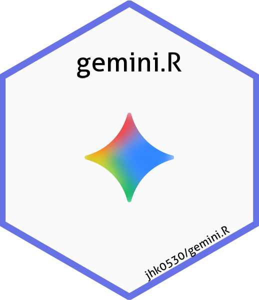

Generate narrative description for an input using Gemini
Source:R/gemini_narrative.R
gemini_narrative.RdGenerate a narrative description for a given input (e.g., table, figure) by converting it to a suitable format and sending it to Gemini.
Examples
if (FALSE) { # \dontrun{
# Example data.frame
table_data <- data.frame(
sort = c(1, 1, 2, 2, 2, 3, 3, 3, 4, 4),
category = c(
"Gender", "Gender", "Age Group", "Age Group", "Age Group",
"Race", "Race", "Race", "Ethnicity", "Ethnicity"
),
type = c(
"F", "M", "<65", ">80", "65-80",
"AMERICAN INDIAN OR ALASKA NATIVE", "BLACK OR AFRICAN AMERICAN", "WHITE",
"HISPANIC OR LATINO", "NOT HISPANIC OR LATINO"
),
Placebo = c(53, 33, 14, 30, 42, NA, 8, 78, 3, 83),
Xanomeline_High_Dose = c(40, 44, 11, 18, 55, 1, 9, 74, 3, 81),
Xanomeline_Low_Dose = c(50, 34, 8, 29, 47, NA, 6, 78, 6, 78),
stringsAsFactors = FALSE # Do not convert strings to factors
)
gemini_narrative(table_data)
} # }